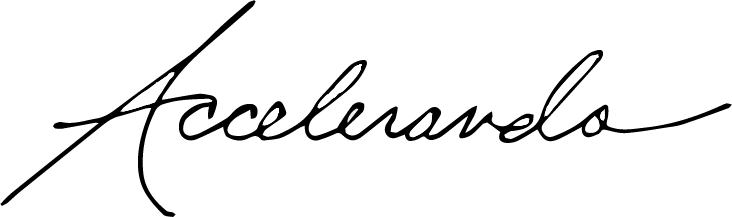
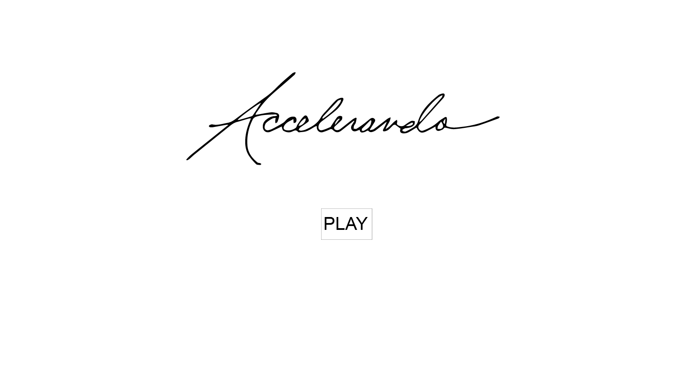
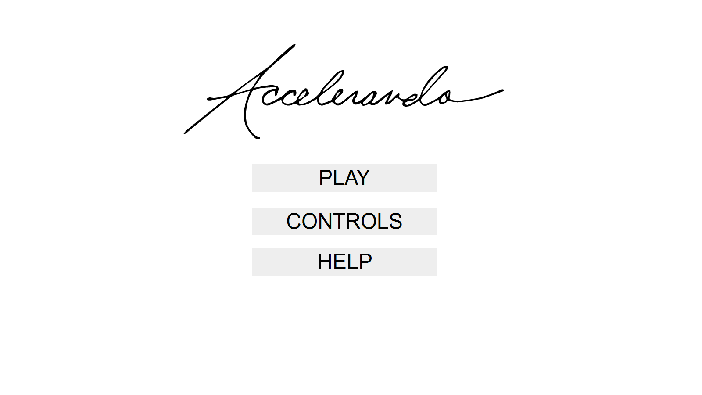
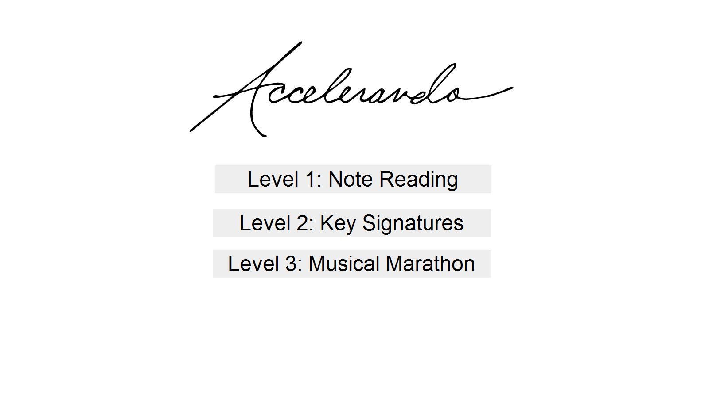
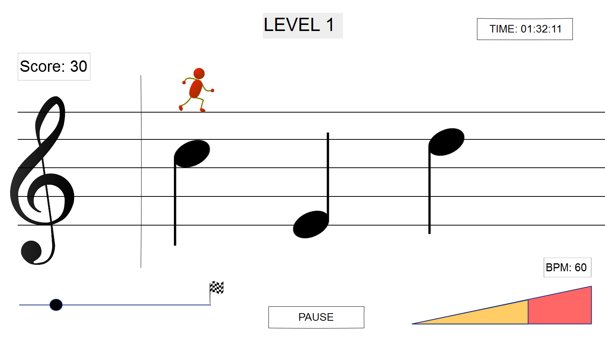
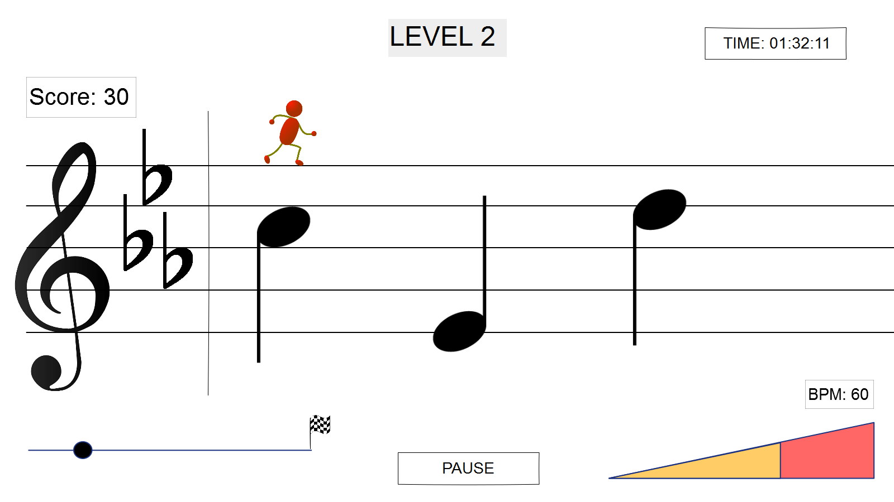
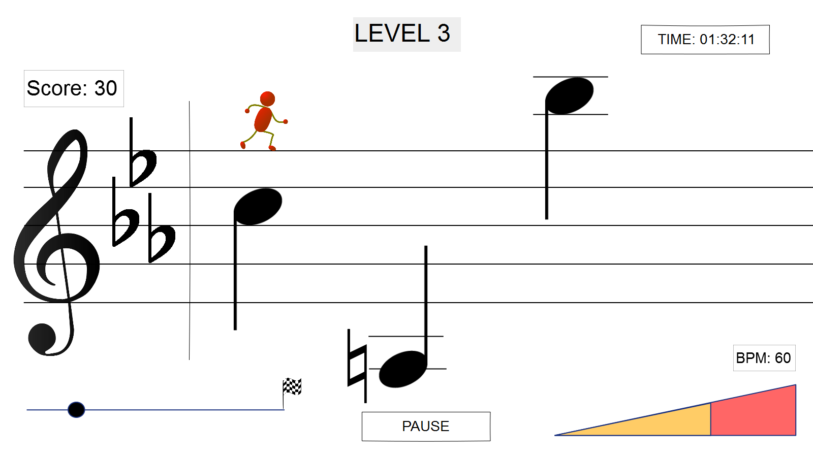
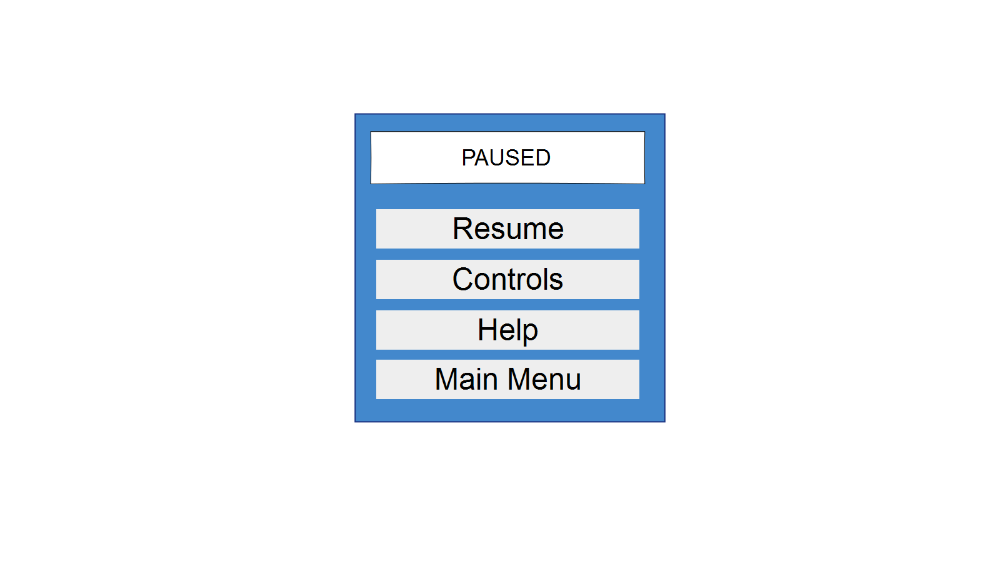
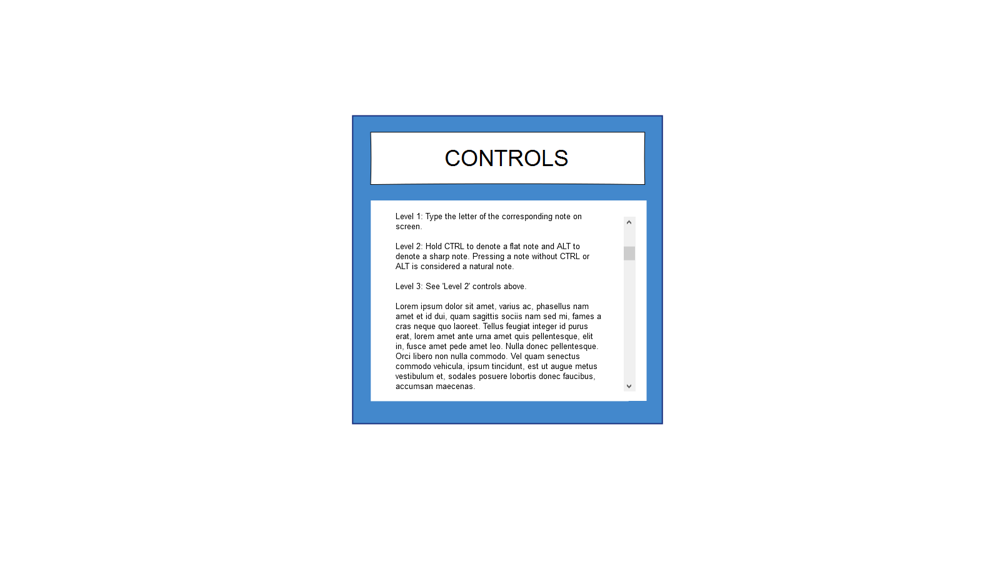
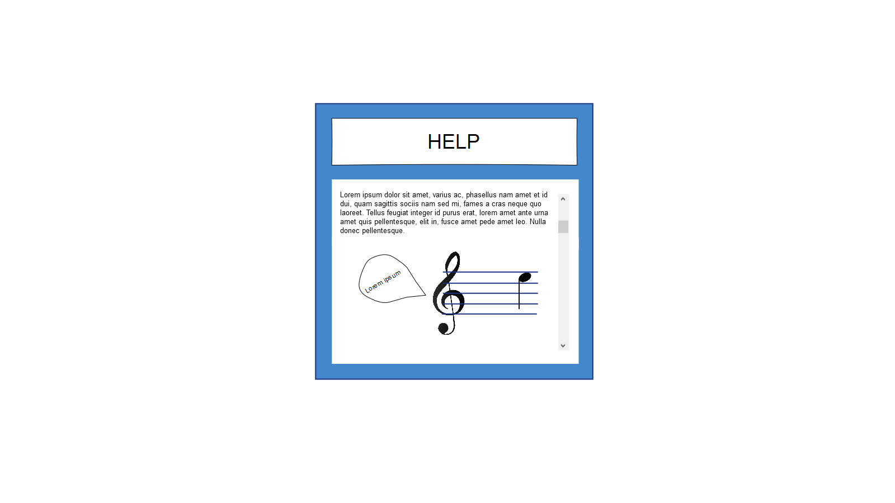

Accelerando Benchmark #1
Game Design Document
by Nicholas Castello, Timothy Hart, Charles Phillips
Introduction
This document describes a game called "Accelerando", which is designed to be a simple, 2D side-scroller, appealing to introductory musicians or anyone with an interest to learn music. This game was created as an exercise to help players learn and identify notes on a staff. Accelerando takes learning music and puts it in a fun game that will keep users coming back to beat their previous time and as a result, increase their knowledge of music. The game will encompass sprite-based animation, collision detection, physics and memory management.
Technology
Accelerando will be developed as a Web Application using the Phaser Game Engine. The graphics will be done in Adobe PhotoShop.
Backstory
Salieri Stafferson lives an ordinary life in Vienna, Austria. He is a top musician and is almost done with his composition which he must present to the Royal Court the next day. Salieri decides to go on a quick walk for inspiration, when he notices something strange. His scientist neighbor, Atom Petridish’s house is glowing red and playing jazz music. Atom hated jazz so Salieri knew something was up. He went to check it out and was sucked off of his feet and into a portal. He had entered Staff World. Everything was made out of music notes and staves. Salieri needed to escape so he could finish his composition by tomorrow. Just then, Bach came out of nowhere and started chasing Salieri! Salieri must stay alive and make it through all the levels of Staff World to get back to his home in Vienna to complete his composition for the Royal Court.
Objective
Mr. Stafferson’s task in this game is to stay alive and get to the finish line as quickly as possible. He will run on top of the staff and throughout the level, will encounter notes on the staff which he will have to identify. Every time the user guesses incorrectly, Mr. Stafferson’s velocity decreases and Mr. Stafferson gets closer to being eaten. If multiple notes are guessed correctly in a row, a combo multiplier will be applied and Mr. Stafferson’s velocity will be increased. Each level will get increasingly difficult, encompassing more aspects of music notation. At the end of the level, the total elapsed time will be displayed on the screen.
GamePlay
The game will be a side-scroller where Mr. Stafferson will automatically be running on the staff. The user will control the speed based on the accuracy of his/her answers in identifying the notes.
The user first will chose either treble clef or bass clef mode which will determine the type of staff they read off of. Next, the user will choose which level they play.
- Level 1:
- Treble Clef Mode:
- Mr. Stafferson will encounter notes ranging from E4 to F5 (only on the treble clef staff). The staff will be in the key of C (no sharps or flats), making this the easiest level.
- Bass Clef Mode:
- Mr. Stafferson will encounter notes ranging from G2 to A3 (only on the Bass clef staff). The staff will be in the key of C (no sharps or flats).
- Level 2:
- Treble Clef Mode:
- Similar to Level 1, all notes will be between E4 to F5, however, now Mr. Stafferson will be in different key signatures. The user will now have to identify the note, as well as specify if it it sharp, natural, or flat, based on the key signature. The key signature will change throughout the level.
- Bass Clef Mode:
- Similar to Level 1, all notes will be between G2 to A3, however, now Mr. Stafferson will be in different key signatures. The user will now have to identify the note, as well as specify if it it sharp, natural, or flat, based on the key signature. The key signature will change throughout the level.
- Level 3:
- Treble Clef Mode:
- Level 3 will be the most challenging level with key signatures and now notes appearing on ledger lines as well. The notes will range from F3 (3 ledger lines below the treble clef staff) to E6 (3 ledger lines above the treble clef staff).
- Bass Clef Mode:
- Level 3 will be the most challenging level with key signatures and now notes appearing on ledger lines as well. The notes will range from A1 (3 ledger lines below the bass clef staff) to G4 (3 ledger lines above the bass clef staff).
The user will have 5 seconds for a guess per note. If he/she runs out of time or guesses incorrectly, Mr. Stafferson’s velocity is reduced. If his velocity gets low enough, he will be eaten by his enemy and lose the game. If the user guesses correctly 10 times in a row, Mr. Stafferson’s velocity will be increased, moving his further from his enemy.
Controls
A - “A” note
B - “B” note
C - “C” note
D - “D” note
E - “E” note
F - “F” note
G - “G” note
Control - Flat note
Alt - Sharp note
Space - Jump (Maybe)
Graphic User Interface
As far as the GUI is concerned, if we consider
- Splash Screen - The splash screen GUI simply presents a game logo and a Start button for the user to press when they are ready to play. Upon pressing it, a brief scripted sequence is played explaining a little about Accelerando and the back story for the game. While playing the message "Press ESC to Skip" should be displayed at the bottom of the screen. If pressed, the game should immediately go to the Manu Menu.
- Main Menu - The main menu GUI presents the game logo and 3 options: play, options, help.
- Level Selection Menu - The level selection menu will present the user with the option to play level 1, level 2, or level 3.
- Gameplay GUI - The gameplay GUI will consist of a large musical staff on screen. A small character will be running on the top line of the staff as the staff (and notes) scroll left. Score will be tallied in the top left. As the player gets quicker and quicker at identifying the correct notes, their speed (beats per minute - BPM) will be updated in the bottom right. The speed of the staff will be updated to reflect these changes. A pause button will be located on the bottom middle of the screen. On the top right of the screen a timer will be displayed. On the bottom left of the screen will be a “map” displaying how much of the song the player has gone through so far and how much remains.
- Pause Menu - The pause menu GUI will present the user with 4 options: resume, options, help, main menu.
- Help Menu - The help menu will contain a document to teach the player about the elements taught in the specific level.
- Controls Menu - The controls menu will show what/how controls are used to play the game.
Artwork
- Salieri Stafferson
- Walking right animation
- Jumping animation
- Dying animation
- Victory animation
- Bach
- Game World
- Staff
- Clef
- Notes
- Velocity indicator
- Map
- Menu
Sound Effects
- Level select sound
- Piano sound corresponding to notes on staff
- Correct guess sound
- Incorrect guess sound
- Speed up sound
- Slow down sound
- Streak multiplier sound
- Mr. Stafferson gets eaten sound
- Lose sound
- Win sound
Music
Wireframes
Splash Page

Main Menu

Level Selection

Level 1

Level 2

Level 3

Pause Menu

Controls Menu

Help Menu
